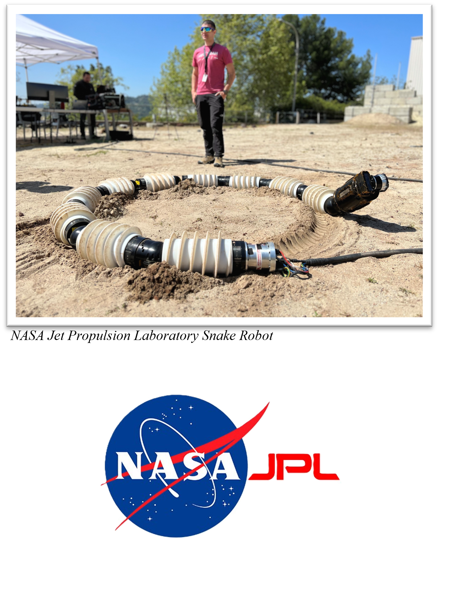
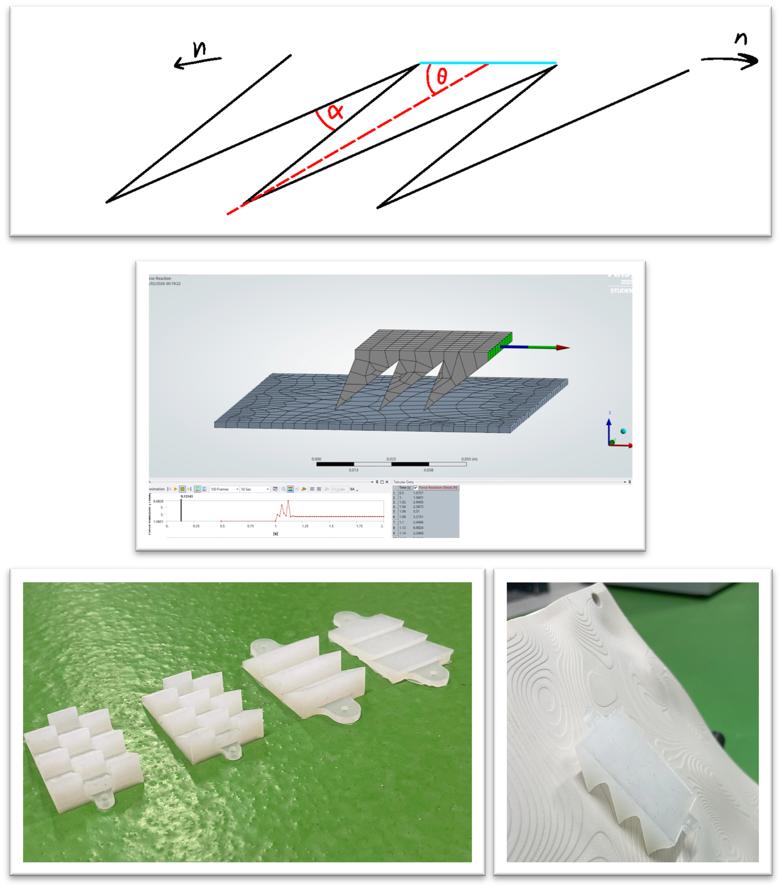
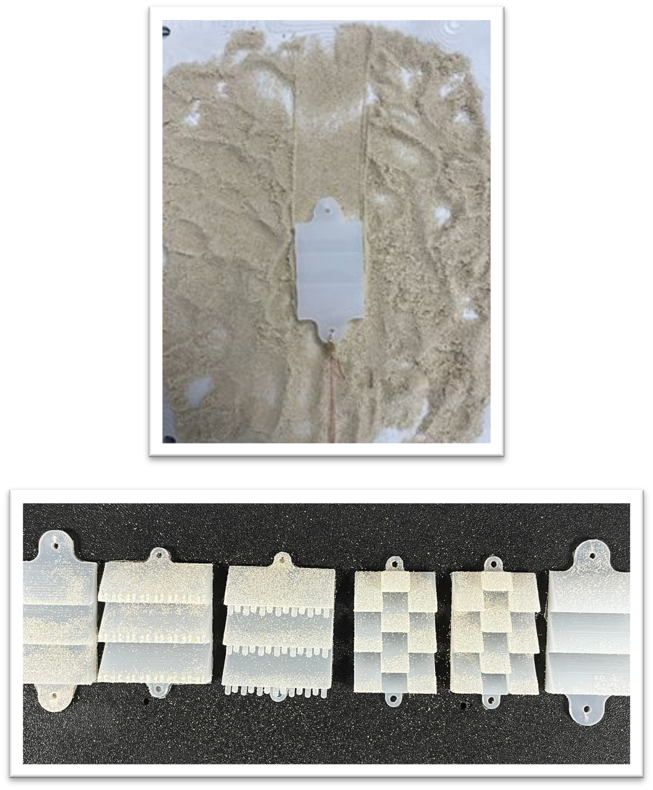

Anisotropic Skin for Lunar Snake Robots
Overview

Project Type: Team
Duration: 12 Weeks
Position: Project Manager and Designer
Time: Spring 2026
Snake robots offer strong potential for exploration in confined and extreme environments
such as lunar caves, where conventional wheeled systems struggle. A key limitation,
however, is the lack of directional friction required for efficient locomotion and climbing.
The work we proposed was a combination of anisotropic snakeskin inspired by biological
snakes and gecko adhesive systems, aimed at achieving high friction in one direction and
low friction in the other while enabling passive dust mitigation.
Simulation studies were carried out, then physical prototypes were manufactured using
silicone casting and tested on an adjustable incline rig that mimics lunar terrain.
We had fortnightly meetings with the team at NASA JPL to discuss findings and propose
new design ideas to progress the project further.
Design Process

Initially my role focused on optimizing theta and alpha for the macro aspect of the design.
I did this in ANSYS using a transient structural model until high reverse-direction friction
was achieved while still limiting forward-direction friction.
Theory only takes you so far, so the snakeskin was then manufactured using Dragonskin 30
silicone. This material would not be appropriate for lunar environments as silicone can
become brittle, so a future route could be thin-wall titanium, though this was beyond our
available budget and manufacturing capabilities.
I then staggered the snakeskin spikes to test whether this improved performance on the
lunar terrain rig that I designed.
End Result

The final snakeskin remained stable up to a 65-degree incline with no load. However,
the dust-mitigation concept of the micro stalks did not perform as intended and instead
captured sand grains. Once a few grains were trapped between stalks, they became locked in place.
Even so, the study established a strong starting point for anisotropic snakeskin designs,
as anisotropic behavior was clearly observed on the terrain rig by measuring drag force
in both directions.
Special Thanks
Thrishantha Nanayakkara
Imperial College London
LinkedIn
Kalind Carpenter
NASA JPL
LinkedIn
Changrak Choi
NASA JPL
LinkedIn